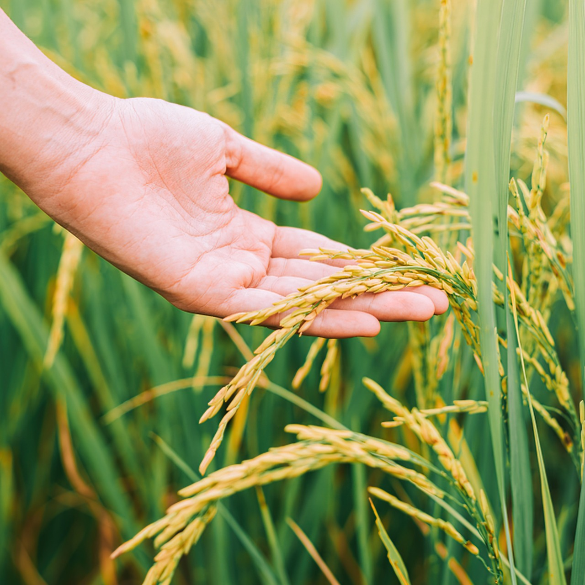
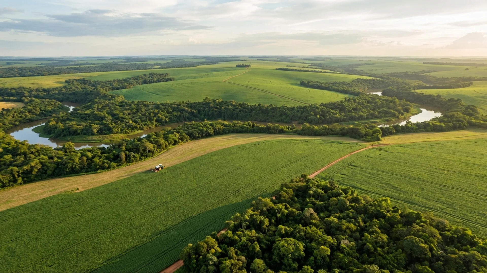

Fazenda São José - Mato Grosso
📍 Sorriso, MT
A Fazenda São José implementou o sistema de Plantio Direto na Palha há 15 anos. Resultado: aumento de 40% na produtividade da soja e redução de 60% na erosão do solo.
Conheça o Agrinho e descubra como a agricultura sustentável transforma vidas e preserva nosso planeta

O Agrinho é um programa educacional criado em 1995 que há quase 30 anos promove a educação para a sustentabilidade no meio rural. Presente em 399 municípios, o programa alcança milhares de estudantes, professores e comunidades rurais.
Desenvolvido pelo Sistema S (SESI, SENAI, SESC e SENAC), o Agrinho tem como missão educar crianças e jovens sobre a importância da agricultura sustentável, formando cidadãos conscientes e preparados para os desafios do futuro.
A agricultura é a base da nossa alimentação e economia. Segundo dados da FAO e do IBGE:

Conheça os fundamentos que sustentam o agro do futuro
Preservação dos recursos naturais, conservação do solo, proteção da biodiversidade e uso responsável da água. A agricultura sustentável protege o planeta para as futuras gerações.
Geração de renda, desenvolvimento econômico local, competitividade no mercado e valorização dos produtos agrícolas. Um agro forte movimenta a economia.
Qualidade de vida no campo, educação, saúde, inclusão social e valorização do trabalhador rural. O Agrinho forma cidadãos conscientes e preparados.
Inovação, agricultura de precisão, automação, biotecnologia e soluções digitais. A tecnologia torna o campo mais produtivo e sustentável.
Dados reais que mostram a importância do agronegócio sustentável
*Dados atualizados em 2024
Clique nos cards para virar e aprender sobre tecnologias sustentáveis
Clique para virar
Técnica que planta sem revolver o solo, mantendo palhada na superfície. Reduz erosão, conserva água e aumenta matéria orgânica.
Clique para virar
Alternar diferentes culturas no mesmo terreno. Melhora a fertilidade do solo, controla pragas naturalmente e quebra ciclos de doenças.
Clique para virar
Sistemas de gotejamento e aspersão controlados por sensores. Economiza até 50% de água e aumenta a produtividade.
Clique para virar
Abelhas e outros polinizadores são essenciais! 75% das culturas alimentares dependem deles. Preservar polinizadores é garantir comida.
Clique para virar
Integração Lavoura-Pecuária-Floresta. Sistema que combina agricultura, pecuária e floresta na mesma área. Aumenta produtividade e recupera pastagens.
Clique para virar
Produção de energia renovável a partir de biomassa (cana-de-açúcar, milho, resíduos). O Brasil é líder mundial em bioenergia!
Conheça de perto a realidade do agronegócio sustentável





Produtores brasileiros que aplicam tecnologias sustentáveis
📍 Sorriso, MT
A Fazenda São José implementou o sistema de Plantio Direto na Palha há 15 anos. Resultado: aumento de 40% na produtividade da soja e redução de 60% na erosão do solo.
Cascavel, PR
Integração Lavoura-Pecuária-Floresta que recuperou 500 hectares de pastagem degradada. Hoje produz grãos, gado e madeira de eucalipto na mesma área.
Região Sul
Agricultores familiares que adotaram irrigação por gotejamento e rotação de culturas. Aumentaram a renda em 150% e economizam 50% de água.
Tem dúvidas sobre o Agrinho? Envie uma mensagem!
Sistema S - Programa Agrinho
Brasília, DF
0800 644 0048
contato@agrinho.org.br
www.agrinho.org.br